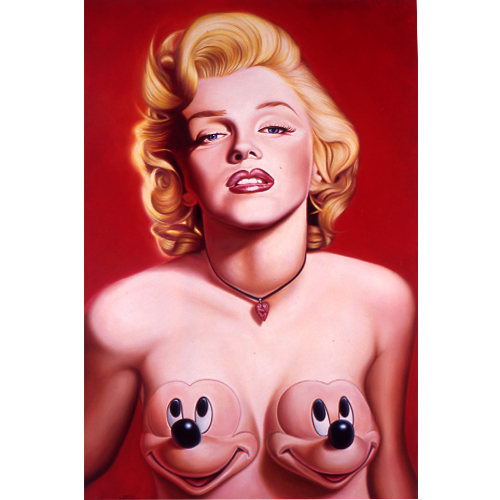

Exhibitions
Bipolar Surrealism, Opera Gallery, New York, New York, US, May 24–June 11, 2001.
Literature
Ron English, Abject Expressionism: The Art of Ron English (San Francisco: Last Gasp, 2002), p.96. ISBN 978-0867196894.
Marilyn in Art (London: Pop Art Books, 2006), pp. 68–69, 123. ISBN 1-904957-02-1.
Notes
Also known as Marilyn with Mickey Mounds.
Abject Expressionism, the year of this work was erroneously listed as 2006.
This work references Marilyn Monroe. A representative image is available here .